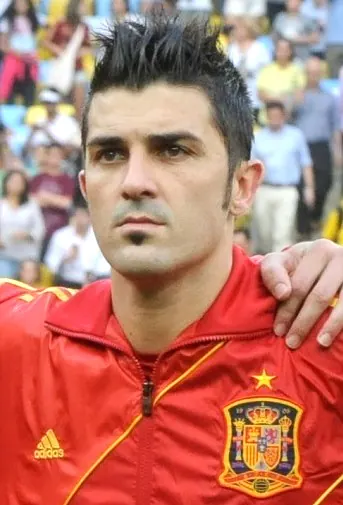

The profile
David Villa
David Villa was born in Tuilla, a village in Asturias, Spain. He developed in the region’s football system before establishing himself as a senior striker.
He scored regularly for Zaragoza, Valencia and Barcelona before later spells with Atlético Madrid and clubs abroad. He strikes early with either foot and finds shooting positions even when defenders crowd the box. His movement across the front line made him an effective partner for Spain's possession-heavy midfield.
Spain's 2010 World Cup side often won by narrow margins, making Villa's goals especially valuable. He scored five times, including decisive knockout goals against Portugal and Paraguay, and shared the tournament scoring lead. His finishing carried Spain through matches in which chances were scarce, setting up the team's first World Cup title even though Andrés Iniesta scored the final winner.
2006Germany
Round of 16
Group H Spain4 : 0Ukraine
- Xabi ALONSO13′
- David VILLA17′
- David VILLA48′ · pen.
- Fernando TORRES81′
Spainhome
Starting lineup
- Iker CASILLAS
- Mariano PERNIA
- Carles PUYOL
- Sergio RAMOS
- PABLO
- Xavi HERNANDEZ
- Xabi ALONSO
- Marcos SENNA
- Fernando TORRES
- Luis GARCIA
- David VILLA
Substitutions
- 55′RAUL on · David VILLA off
- 55′David ALBELDA on · Xabi ALONSO off
- 77′Cesc FABREGAS on · Luis GARCIA off
Ukraineaway
Starting lineup
- Oleksandr SHOVKOVSKYI
- Andriy NESMACHNYI
- Vladimir YEZERSKYI
- Andriy RUSOL
- Vladyslav VASHCHUK
- Anatoliy TYMOSHCHUK
- Oleg GUSEV
- Andriy GUSIN
- Ruslan ROTAN
- Andriy SHEVCHENKO
- Andriy VORONIN
Substitutions
- 45+1′Oleg SHELAYEV on · Andriy GUSIN off
- 45+1′Andriy VOROBEY on · Oleg GUSEV off
- 64′Serhiy REBROV on · Ruslan ROTAN off
Group H Spain3 : 1Tunisia
- RAUL71′
- Fernando TORRES76′
- Fernando TORRES90+1′ · pen.
- Jaouhar MNARI8′
Spainhome
Starting lineup
- Iker CASILLAS
- Mariano PERNIA
- Carles PUYOL
- Sergio RAMOS
- PABLO
- Xavi HERNANDEZ
- Xabi ALONSO
- Marcos SENNA
- Fernando TORRES
- Luis GARCIA
- David VILLA
Substitutions
- 45+1′RAUL on · Luis GARCIA off
- 46′Cesc FABREGAS on · Marcos SENNA off
- 57′JOAQUÍN on · David VILLA off
Tunisiaaway
Starting lineup
- Ali BOUMNIJEL
- Karim HAGGUI
- Hatem TRABELSI
- Radhi JAIDI
- Anis AYARI
- Mehdi NAFTI
- Jaouhar MNARI
- Riadh BOUAZIZI
- Aadel CHEDLI
- Hamed NAMOUCHI
- Zied JAZIRI
Substitutions
- 57′Kais GHODHBANE on · Riadh BOUAZIZI off
- 57′Alaeddine YAHIA on · Anis AYARI off
- 80′Haykel GUEMAMDIA on · Aadel CHEDLI off
Group H Saudi Arabia0 : 1Spain
- JUANITO36′
Saudi Arabiahome
Starting lineup
- Mabrouk ZAID
- Ahmed AL DOSARI
- Redha TUKAR
- Hamad AL MONTASHARI
- Abdulaziz KHATHRAN
- Hussein AL SULAIMANI
- Mohammed NOOR
- SAUD KARIRI
- Khaled AZIZ
- Sami AL JABER
- Saad AL HARTHI
Substitutions
- 13′Nawaf AL TEMYAT on · Khaled AZIZ off
- 68′Malek AL HAWSAWI on · Sami AL JABER off
- 81′Mohammed AL MOWALLAD on · Hussein AL SULAIMANI off
Spainaway
Starting lineup
- Santiago CANIZARES
- Michel SALGADO
- Carlos MARCHENA
- Antonio LOPEZ
- JUANITO
- David ALBELDA
- Jose Antonio REYES
- Andres INIESTA
- JOAQUÍN
- Cesc FABREGAS
- RAUL
Substitutions
- 45+1′David VILLA on · RAUL off
- 66′Xavi HERNANDEZ on · Cesc FABREGAS off
- 70′Fernando TORRES on · Jose Antonio REYES off
Round of 16 Spain1 : 3France
- David VILLA28′ · pen.
- Franck RIBÉRY41′
- Patrick VIEIRA83′
- Zinedine ZIDANE90+2′
Spainhome
Starting lineup
- Iker CASILLAS
- Mariano PERNIA
- Carles PUYOL
- Sergio RAMOS
- PABLO
- Xavi HERNANDEZ
- Xabi ALONSO
- Cesc FABREGAS
- RAUL
- Fernando TORRES
- David VILLA
Substitutions
- 54′Luis GARCIA on · RAUL off
- 54′JOAQUÍN on · David VILLA off
- 72′Marcos SENNA on · Xavi HERNANDEZ off
Franceaway
Starting lineup
- Fabien BARTHEZ
- Eric ABIDAL
- William GALLAS
- Lilian THURAM
- Willy SAGNOL
- Patrick VIEIRA
- Claude MAKELELE
- Florent MALOUDA
- Zinedine ZIDANE
- Franck RIBÉRY
- Thierry HENRY
Substitutions
- 74′Sidney GOVOU on · Florent MALOUDA off
- 88′Sylvain WILTORD on · Thierry HENRY off
2010South Africa
Champion
Group H Spain0 : 1Switzerland
- Gelson FERNANDES51′
Spainhome
Starting lineup
- Iker CASILLAS
- Gerard PIQUE
- Carles PUYOL
- Joan CAPDEVILA
- Sergio RAMOS
- Andres INIESTA
- Xavi HERNANDEZ
- Xabi ALONSO
- Sergio BUSQUETS
- David SILVA
- David VILLA
Substitutions
- 60′Fernando TORRES on · Sergio BUSQUETS off
- 61′Jesús NAVAS on · David SILVA off
- 76′PEDRO on · Andres INIESTA off
Switzerlandaway
Starting lineup
- Diego BENAGLIO
- Stephan LICHTSTEINER
- Philippe SENDEROS
- Stephane GRICHTING
- Reto Ziegler
- Benjamin HUGGEL
- Tranquillo BARNETTA
- Gokhan INLER
- Gelson FERNANDES
- Blaise NKUFO
- Eren Derdiyok
Substitutions
- 35′Steve VON BERGEN on · Philippe SENDEROS off
- 78′Hakan YAKIN on · Eren Derdiyok off
- 90+1′Mario EGGIMANN on · Tranquillo BARNETTA off
Group H Spain2 : 0Honduras
- David VILLA16′
- David VILLA50′
Spainhome
Starting lineup
- Iker CASILLAS
- Gerard PIQUE
- Carles PUYOL
- Joan CAPDEVILA
- Sergio RAMOS
- Xavi HERNANDEZ
- Xabi ALONSO
- Sergio BUSQUETS
- David VILLA
- Fernando TORRES
- Jesús NAVAS
Substitutions
- 65′Cesc FABREGAS on · Xavi HERNANDEZ off
- 69′Juan MATA on · Fernando TORRES off
- 76′Alvaro ARBELOA on · Sergio RAMOS off
Hondurasaway
Starting lineup
- Noel VALLADARES
- Osman CHAVEZ
- Maynor FIGUEROA
- Emilio IZAGUIRRE
- Sergio MENDOZA
- Wilson PALACIOS
- Danilo TURCIOS
- Amado GUEVARA
- David SUAZO
- Roger ESPINOZA
- Walter MARTINEZ
Substitutions
- 45′Georgie WELCOME on · Roger ESPINOZA off
- 62′Ramon NUNEZ on · Danilo TURCIOS off
- 83′Jerry PALACIOS on · David SUAZO off
Group H Chile1 : 2Spain
- Rodrigo MILLAR46′
- David VILLA23′
- Andres INIESTA36′
Chilehome
Starting lineup
- Claudio BRAVO
- Waldo PONCE
- Mauricio ISLA
- Gary MEDEL
- Gonzalo JARA
- Arturo VIDAL
- Jorge VALDIVIA
- Marco ESTRADA
- Alexis SANCHEZ
- Mark GONZALEZ
- Jean BEAUSEJOUR
Substitutions
- 45+1′Rodrigo MILLAR on · Mark GONZALEZ off
- 45+1′Esteban PAREDES on · Jorge VALDIVIA off
- 64′Fabian ORELLANA on · Alexis SANCHEZ off
Spainaway
Starting lineup
- Iker CASILLAS
- Gerard PIQUE
- Carles PUYOL
- Joan CAPDEVILA
- Sergio RAMOS
- Andres INIESTA
- Xavi HERNANDEZ
- Xabi ALONSO
- Sergio BUSQUETS
- David VILLA
- Fernando TORRES
Substitutions
- 54′Cesc FABREGAS on · Fernando TORRES off
- 72′MARTINEZ Javi on · Xabi ALONSO off
Round of 16 Spain1 : 0Portugal
- David VILLA62′
Spainhome
Starting lineup
- Iker CASILLAS
- Gerard PIQUE
- Carles PUYOL
- Joan CAPDEVILA
- Sergio RAMOS
- Andres INIESTA
- Xavi HERNANDEZ
- Xabi ALONSO
- Sergio BUSQUETS
- David VILLA
- Fernando TORRES
Substitutions
- 57′Fernando LLORENTE on · Fernando TORRES off
- 87′PEDRO on · David VILLA off
- 90+2′Carlos MARCHENA on · Xabi ALONSO off
Portugalaway
Starting lineup
- EDUARDO
- BRUNO ALVES
- RICARDO CARVALHO
- RICARDO COSTA
- FABIO COENTRAO
- PEPE
- RAUL MEIRELES
- TIAGO
- CRISTIANO RONALDO
- SIMAO
- HUGO ALMEIDA
Substitutions
- 57′DANNY on · HUGO ALMEIDA off
- 71′LIEDSON on · SIMAO off
- 71′PEDRO MENDES on · PEPE off
Quarterfinal Paraguay0 : 1Spain
- David VILLA82′
Paraguayhome
Starting lineup
- Justo VILLAR
- Dario VERON
- Claudio MOREL
- Paulo DA SILVA
- Antolín ALCARAZ
- Edgar BARRETO
- Jonathan SANTANA
- Victor CACERES
- Cristian RIVEROS
- Oscar CARDOZO
- Nelson VALDEZ
Substitutions
- 63′Enrique VERA on · Edgar BARRETO off
- 71′Roque SANTA CRUZ on · Nelson VALDEZ off
- 84′Lucas BARRIOS on · Victor CACERES off
Spainaway
Starting lineup
- Iker CASILLAS
- Gerard PIQUE
- Carles PUYOL
- Joan CAPDEVILA
- Sergio RAMOS
- Andres INIESTA
- Xavi HERNANDEZ
- Xabi ALONSO
- Sergio BUSQUETS
- David VILLA
- Fernando TORRES
Substitutions
- 55′Cesc FABREGAS on · Fernando TORRES off
- 74′PEDRO on · Xabi ALONSO off
- 83′Carlos MARCHENA on · Carles PUYOL off
Semifinal Germany0 : 1Spain
- Carles PUYOL72′
Germanyhome
Starting lineup
- NEUER Manuel
- Arne FRIEDRICH
- Philipp LAHM
- Per MERTESACKER
- BOATENG Jerome
- Sami KHEDIRA
- Bastian SCHWEINSTEIGER
- Mesut OEZIL
- Piotr TROCHOWSKI
- Lukas PODOLSKI
- Miroslav KLOSE
Substitutions
- 51′Marcell JANSEN on · BOATENG Jerome off
- 61′Toni Kroos on · Piotr TROCHOWSKI off
- 80′Mario GOMEZ on · Sami KHEDIRA off
Spainaway
Starting lineup
- Iker CASILLAS
- Gerard PIQUE
- Carles PUYOL
- Joan CAPDEVILA
- Sergio RAMOS
- Andres INIESTA
- Xavi HERNANDEZ
- Xabi ALONSO
- Sergio BUSQUETS
- David VILLA
- PEDRO
Substitutions
- 80′Fernando TORRES on · David VILLA off
- 85′David SILVA on · PEDRO off
- 90+2′Carlos MARCHENA on · Xabi ALONSO off
Final Netherlands0 : 1Spain
- Andres INIESTA115′
Netherlandshome
Starting lineup
- Maarten Stekelenburg
- Gregory VAN DER WIEL
- John HEITINGA
- Joris MATHIJSEN
- Giovanni VAN BRONCKHORST
- Mark VAN BOMMEL
- Nigel DE JONG
- Wesley SNEIJDER
- Dirk KUYT
- Robin VAN PERSIE
- Arjen ROBBEN
Substitutions
- 70′Eljero ELIA on · Dirk KUYT off
- 98′Rafael VAN DER VAART on · Nigel DE JONG off
- 104′Edson BRAAFHEID on · Giovanni VAN BRONCKHORST off
Spainaway
Starting lineup
- Iker CASILLAS
- Gerard PIQUE
- Carles PUYOL
- Joan CAPDEVILA
- Sergio RAMOS
- Andres INIESTA
- Xavi HERNANDEZ
- Xabi ALONSO
- Sergio BUSQUETS
- David VILLA
- PEDRO
Substitutions
- 59′Jesús NAVAS on · PEDRO off
- 86′Cesc FABREGAS on · Xabi ALONSO off
- 105′Fernando TORRES on · David VILLA off
2014Brazil
Group stage
Group B Australia0 : 3Spain
- David VILLA35′
- Fernando TORRES68′
- Juan MATA81′
Australiahome
Starting lineup
- Mathew RYAN
- DAVIDSON Jason
- Matthew SPIRANOVIC
- Ryan McGOWAN
- Alex WILKINSON
- Tommy OAR
- Oliver BOZANIC
- Mile JEDINAK
- Matt McKAY
- Mathew LECKIE
- Adam TAGGART
Substitutions
- 45′Ben HALLORAN on · Adam TAGGART off
- 60′James TROISI on · Tommy OAR off
- 71′Mark BRESCIANO on · Oliver BOZANIC off
Spainaway
Starting lineup
- Pepe REINA
- Raul ALBIOL
- JUANFRAN
- Sergio RAMOS
- Jordi ALBA
- Andres INIESTA
- Xabi ALONSO
- KOKE
- Santi Cazorla
- David VILLA
- Fernando TORRES
Substitutions
- 55′Juan MATA on · David VILLA off
- 67′Cesc FABREGAS on · Santi Cazorla off
- 82′David SILVA on · Xabi ALONSO off